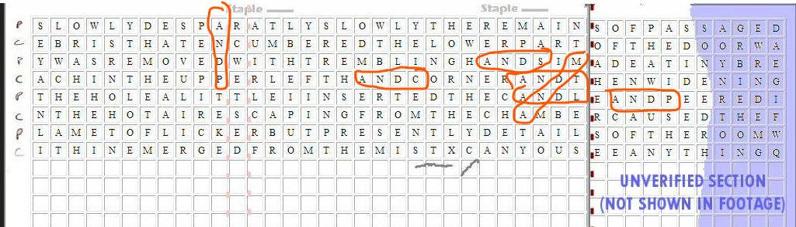
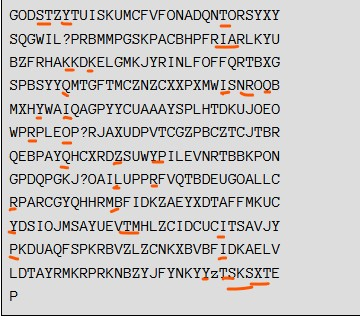
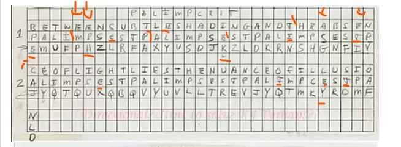
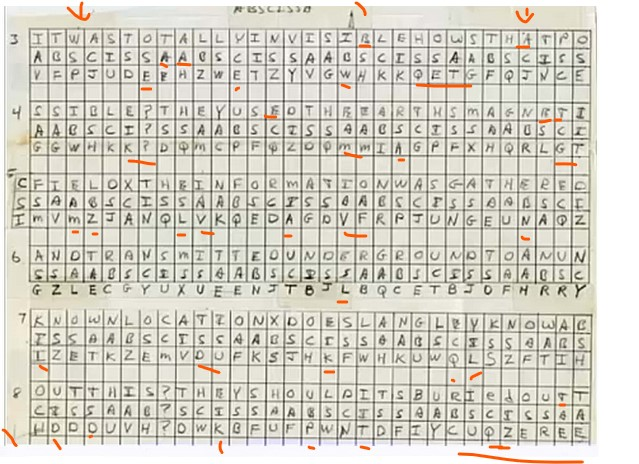
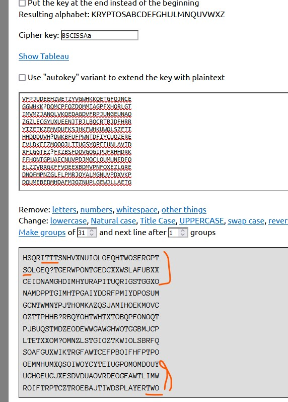
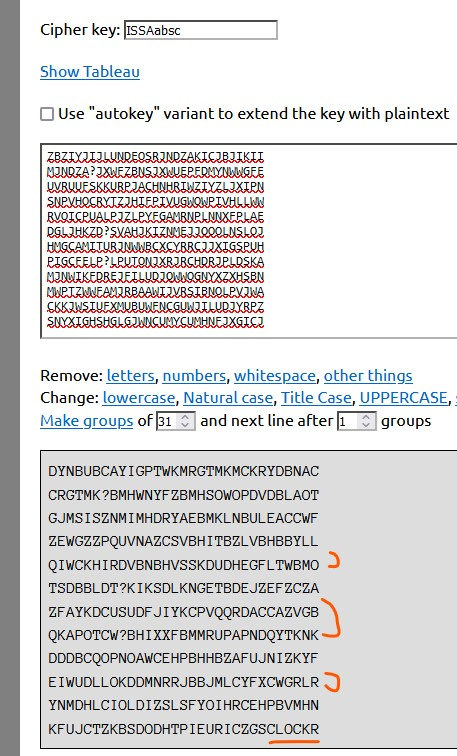
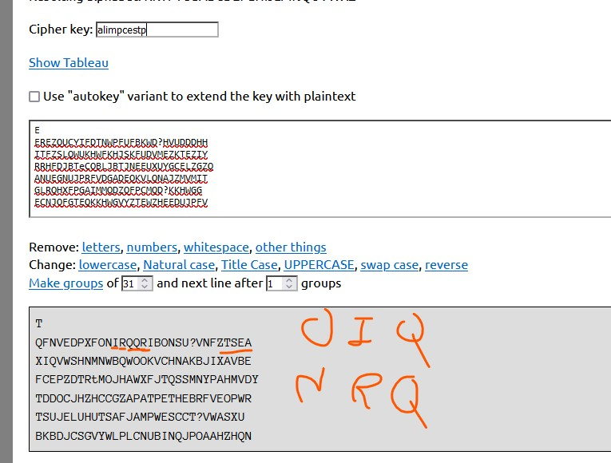
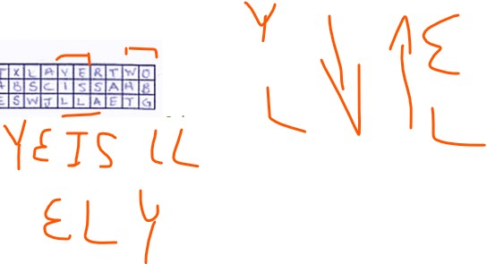
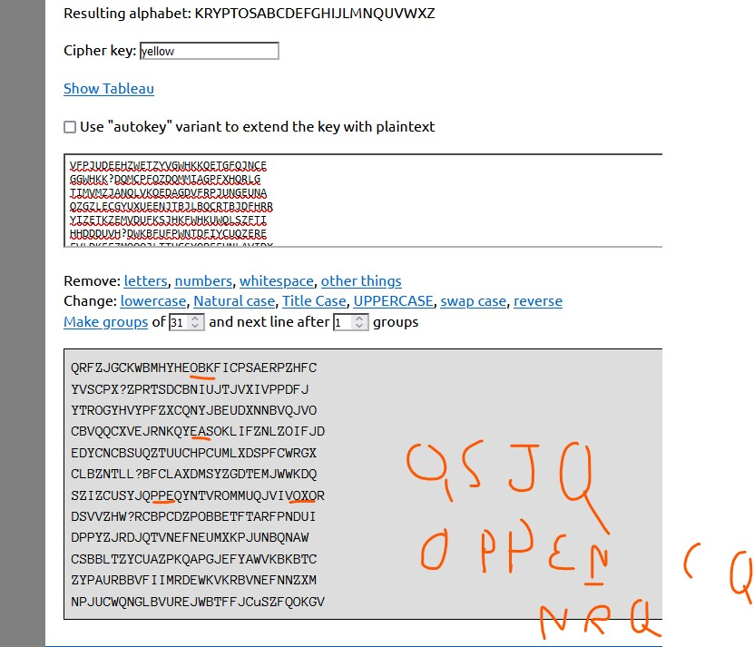
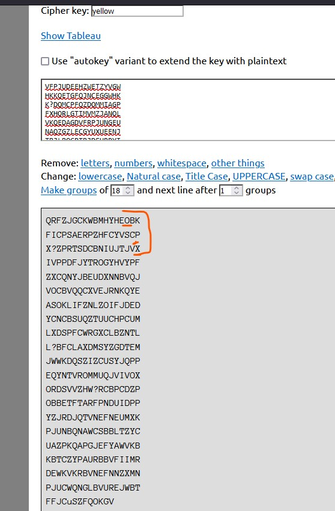

Kryptos
Introducción
Kryptos es una escultura del escultor Jim Sanborn instalada en las oficinas de la CIA en Langley desde 1990.
Análisis
K0
Lo primero que se debe resolver es el código morse o K0. Una vez resulto llama la atención varias cosas.
La colocación de las palabras, izquierda derecha y de arriba a abajo y de derecha a izquierda y de abajo a arriba.
La e es la letra más ulitizada en inglés.
La existencia del palíndromo en interpretat.
El propio morse en si, su estructura y diseño.Jugando con puntos dos letras dan lugar a una. Como GT forman Q. Además tres puntos forman una línea.
El we forces e, que puede ser interpretado como f or c, w for c, e for c.
Digetal, dig en inglés es extraer, a la i en morse si le quitamos un punto se vuelve una e.
T is your position, tposition puede significar transposición. O t es y o t es tu p.
SOS recalca la importancia del morse.
RQ podría significar request pero también los códigos de radio RQ, vuelta al morse.
Destaca la colocación de T IS, SOS y RQ, la pirámide que hacen. Destacar que IOQ es vigenère, se verá más adelante.
Por último destaca la cantidad de letras e que hay, como si hubiera extraído o retrocedido algo.
Vistazo general
En la escultura destaca que se muestra una tabla vigenère, esta tabla tiene un alfabeto de 31 letras excepto en la letra N que tiene 32, destacando una L.La palabra que usa es kryptos, que significa secreto. Destaca que si cogemos 26 letras del alfabeto, las siguientes es como invertir el sentido. A pesar de que muestra esta tabla, no es la que se usa para desencriptar K1 y K2. Destacar que el alfabeto va rotando en cada letra una posición.
Si agrupasemos desde el mensaje cifrado desde las letras END hasta el final en 14 filas de 31 caracteres empezamos a ver cosas.
Aparece la palabra END y DOT (punto). Abajo vemos TWO, OXO en forma de L, AIR y KRSO(T)YP (kryptos) como indicando una transposición o cambio de orden o sentido. También aparece PGP (Sanborn y la CIA sabían de su existencia antes de publicarse?) y KR (parte privada) y KU (parte pública).
Podemos ver palabras como STEW, SITE (sitego, stego), HARD (guisado, sitio,duro/difícil, que se puede interpretar como sitio revuelto difícil) colocadas en columna en el texto cifrado y DIG.
Destaca la agrupación de 3 T en vertical y de la XTT vertical de la esquina inferior.
Si observamos bien todo el texto cifrado en la parte superior e inferior vemos una llave pero en sentido contrario.
Fichas manuscritas de Jim de mejor calidad del NYT
Herramienta online transposición
En la esquina superior izquierda desde el END vemos ENDYAHR donde las letras YA_R están como elevadas. Se puede leer como HR A DY (horas en un día), como YEAR(año), como las iniciales de yellow, ambar, red (amarillo, ambar, rojo), o como un patrón.
K3
A mi parecer, este es el siguiente fragmento a desencriptar. Es una transposición que va desde el E del END hasta la última ?. Primero agrupa las letras en filas con un total de 24 caracteres por fila y luego las gira en sentido contrario al reloj. A continuación, forma filas de 8 caracteres y vuelve a girar en sentido contrario.
El texto es un fragmento de las notas diario de Howard Carter al descubrir la tumba de Tutankamón.
Si analizamos tranquilamente el texto,vemos que nos intentra decir algo más que una forma de proceder. Al texto parece que le falta una letra E, le sobra una Q y hay una A en lugar de una E en DESPARATLY.
Habla de retirar los escombros de la parte inferior de la puerta, aunque doorway es puerta en inglés, también puede ser portal, entrada o el paso(paso en inglés es passage,step). Si separamos door(puerta, entrada) y way, way significa por si solo la forma, el camino o el modo o la manera. Remains significa restos pero puede ser interpretado como remain (quedar,quedarse,permanecer,estar) (-S). Main significa principal, mayor , importante o maestro (-S) y mains significa red eléctrica.
Passage significa el paso, el pasillo o la aprobación pero si separamos pass(pasar, aprobar, superar,adelantar, el paso) y age(edad, época). Encumber significa cargar,sobrecargar, estorbar o grabar pero (C-)umbered significa numerada. Breach significa brecha, abrir una brecha(verbo), infringir o infracción o incumplimiento. Reach significa el alcance, la distancia, la extensión o envergadura. Pero también alcanzar, llegar, abarcar, alargar o extenderse.
Puede que nos este diciendo que existen escombros o máscara entre el cifrado correcto y el que vemos que hay que retirar, puede que nos diga como. Pasando o dandole una pasada. Puede que nos sea posible de K2. Estos restos estorban o sobrecargan o puede que indiquen numeración. Tampoco tenemos muy claro cual es la parte de abajo, quizás el END. Se puede leer REACH IN THE UPPER LEFT HAND CORNER (extiende en la esquina de la mano izquierda o quizás nos habla del error de K1 o del final de K3) y H IN T (hint, pista). Habla de insertar la vela, y que el aire caliente saliendo de la cámara hizo parpadear la llama presentando los detalles de la habitación. Habla de quitar muy despacio, las cámaras capturan un instante de tiempo, un estado. Pero juntando fotogramas podemos ver una secuencia. Quizás cada letra de K4 debe ser sacada en un estado concreto, de manera que se recorre una serie de estados entrelazados.
Aire caliente es O2 quemado que es CO2, parpadea como YA_R(un patrón o semáforo o el tiempo en un año o día?), details contiene tail que significa cola. También se ve que en el texto cifrado de K3 en la esquina superior END,AC,T como candle. Quizás la L de la tabla vigenere tiene relación con K3 o K1. En mi mente, cabe lugar YA_R (year es año)+ candle =calendar.
DETAILS OF THE ROOM WITHIN EMERGED FROM THE MIST(niebla) X, se puede leer como él perdio T (aunque perder en inglés es miss) o unidas (merge, fusinar, unir) por la perdida T.
Destacar que CHAMBER tiene amber, PEERED tiene red. ENCUMBERED tiene red.
Aunque de K3 se puede sacar más información que analizaremos más adelante vamos a las dos últimas de relevancia por ahora. La pregunta final cuya respuesta real según el libro fue "wonderful things" y según las notas de campo "Yes, it is wonderful". ¿Nos está preguntando Jim por las Q? o ¿it is w es importante?, ¿debemos responder (rq=request?)?
Para acabar y lo que todo el mundo se pregunta, ¿de dónde sale la clave de K1?. Fácil, la llama parpadea pero hay que insertar la vela. Agrupamos del texto en plano:
K1
Lo forman los 63 primeros caracteres, la clave es palimpsest, que hace referencia a un manuscrito que conserva huellas de otra escritura anterior en la misma superficie, pero borrada expresamente para dar lugar a la que ahora existe. Se descifra con Vigenère aunque no con la tabla que nos da Jim. La tabla que se usa en la cabecera superior empieza por kryptos y en la fila de la A acaba con kryptos, cifrandose Z con A se optiene S. Aquí destaca las pistas end como indicando posiciones de la palabra kryptos y T IS YOUR POSITION de manera que de las últimas filas de cifrado T ...YP coincide con la tabla Vigenère que se usa donde la fila de la T acaba en YP. /p>
En el descifrado vemos un error en iQlusion, si usamos la S al descifrar pero si usamos C vemos illusion. Con S la letra cifrada sería W. El texto nos habla de sombras y ausencia de luz (oscuridad), además de estar o mentir el matiz (doble significado en inglés) de la illusion o ¿de la Q y la C? De forma observadora se puede leer entre la s y la t o entre la s y la a o entre la g y la t o entre la g y la a o entre ing (ingq final de K3) y abs (abscissa).
K2
La clave de K2 se saca del texto plano de K1 y palimpsest usando la tabla Vigenère de K1, si usamos las palabras del morse allyinvisible obtenemos la palabra clave abscissa. Nos habla de transmitir información usando el campo magnético de la Tierra. Nos da unas coordenadas, que supuestamente correspondían al lugar donde se enterro un USGS estadounidense. Hacia el final del texto Jim quito una S en el cifrado y el final se descifra como IDBYROWS (identificado por filas?) aunque en realidad es XLAYERTWO.
Si el texto plano de K2 lo colocamos en filas de 8 caracteres al final se lee TWO OXO en forma de L.
Empezamos a jugar
Jim ha dado algunas palabras del texto plano de K4 como BERLINCLOCK y EASTNORTHEAST. También comento que deberíamos indagar más en el reloj de Berlín.
Llama la atención la forma en L two oxo porque recuerda al 3 en raya y oxo es la nomenclatura para los óxidos. El aire caliente origina CO2. Cobra importancia la C de iqlusion.
Si en K3 tomamos el texto cifrado sin errores(desperately y sin q) y los desencriptamos con la palabra clave abscissa aparece openncq, obk y YPCOLCXTS. Destacar oppencq.
APODQXRUYNoSWXyQZURCZBOJTERUMFR WTOVYVUERWPKPJREOBWXFVXIKTWXVMU FKTPUUTUXBRXORUGCKKSXUPKXTJPCYF LRSQAOHWOYKTRXRUBCDYPCOLCXTSWOX JKTPQQTBJUCWKMECGOBKSVTOMUTVFPZ OPASEOPIOVOPPENCQWOCETSGBLKXTQV JYJBLZTETNMBUXAEEWFBOXYUXYJCYBP QKOTRCKYSXDFOVHDYWBYKZDFWBWTZKE QIMCTOXVQEAXICBFQZUQVKEFFPEYNEW BBNPXVEFWJETSIOOFQZBKIOGTHYUYIG BKTWOUWZEZTYXSBOGAWPCVUXOU
Existen agrupaciones de tres letras consecutivas en K3 cifrado que aparecen 2 veces y descifran K4 usando la tabla de K1 como OIE o MRI.
Si nos fijamos y colocamos el texto cifrado de K3 en filas de 31 caracteres en la fila 10 tenemos una L y una F y encima de estas en la fila 9 y 7 DA y RE respectivamente, que podrían corresponder con descifrar EA del primer EAST.
YAR si le damos la vuelta en morse tenemos QNR que coincide con N de NORTH en K4.NRQ en código RQ significa ruido.
Hora central europea u hora de Europa Central o CET (Central European Time) es uno de los nombres del huso horario que está una hora por delante del tiempo universal coordinado (UTC). Se utiliza en la mayoría de los países europeos y en los del norte de África. Su compensación de tiempo es UTC+1 durante horario estándar y UTC+2 durante el horario de verano (Central European Summer Time, CEST, horario para aprovechar la luz solar). La hora central europea u hora de Europa Central, también es conocida por otros nombres, como hora europea media (Middle European Time). En el pasado se conocía como hora de Berlín. Quizás palimpCEST sea otra pista, y la S perdida sea relevante, 2 capas.
En K4 north, th se desencriptan como TWR y HON, request (RQ), el aire caliente de K3, la respuesta a la pregunta WOnderful.
Si cogemos K2 con el error al final de quitar la s cifrada, y en lugar de desencriptar con abscissa lo hacemos con bscissaa vemos playertwo (3 en raya). Pero si cogemos el texto cifrado completo con la s y desencriptamos con abscissa, cogemos el texto que nos da y lo desencriptamos con bscissaa y asi sucesivamente hasta hacerlo con cissaabs, vemos que aparece clockr. Que puede ser lock r (cierra r).

También se ve en K2 un segundo OXO en el texto plano.

Si nos fijamos en K2 plano sin errores y vemos que O-QX-TWO aparece insertado en K4 como cifrado.
Si intentamos desencriptar K2 sin errores con K4 cifrado como clave al final vemos qqrth, que llama la atención.Sin embargo no coincide con el cifrado en K4 en la posición de north, quizas porque hay que reordenar el K4 cifrado para usarlo como clave.
Si tomamos K2 cifrado sin errores y usamos candle como clave para desencriptar empiezan a aparecer pares de caracteres cifrado clave plano de K4. Si quitamos algunos caracteres y aplicamos sucesivos desencriptados van apareciendo parejas pero no llegamos a un texto completo. Aquí remarcar el patrón de YA_R, el O2 a OCO (CO2) que pasa a X y el RQ de NRQ. Si esta es la forma de desencriptar, nos falta saber de forma precisa que letra quitar o como mover las letras.
Si a K1 cifrado lo colocamos en filas de 18 caracteres, empezamos a descifrar, vemos en la última columna ILO, si cogemos ese texto y lo desencriptamos con alimpsestp vemos que empieza con RQIOBOBKL, si seguimos sustituyendo desplazando letras de la clave en la última columna tenemos DKO, que coincide en K4 con DKO-OLI.
En K4 destacan varias cosas, la primera es Q?OBKR. Se asemeja a lock de clock. Si nos fijamos al desencriptar clock en K4 aparece CBAQK que es como back y aparece la Q de por medio. Destaca que el final de K4 es KCAR. Aparece junto BERLINCLOCK. CLOCK contiene lock, cerrar. Si miramos kryptos visualmente parece que existen dos llaves invertidas. En Berlín existe una llave que cuando abrimos una puerta solo podemos recuperar la llave cerrandola. Esta llave se mete, se gira, se empuja otro poco,se gira desde ell otro lado y se tira de ella por el aldo contrario al que se metio. También existía en el muro de Berlín unas puertas que tenían dos cerraduras y necesitaban dos llaves distintas y dos personas para abrirse. Quizas el clock es un error intencionado en lugar de block.
También llama la atención palabras en K3 como ENCUMBERED AMBER y TREMBLING, recuerdan a Berlín.
El end de K3 y berlinclock recuerda al edificio Bendlerblock.
En K2 maGneTic, coincide que cifrado hay QR y que NE en morse es D y NI en morse es B
Analizando la letra de Jim
Alguna gente ha visto o Jim ha publicado algunas partes de los papeles originales de puño y letra de Jim.
Empezando por una entrevista en NovaScience, vemos varias cosas. Jim escribio desparatly con la e en minuscula. Vemos dos tipos de letras A, unas con un pico hacia arriba .Vemos que en el texto plano organizado en filas de 42 caracteres, existen a los lados de cada fila una letra c o p, que peude ser cipher y plain o candle y palimpsest. Esto lleva a pensar en palimpsest como plaintext. La fila cinco tiene una p distinta , su palo es diferente. También se ve unas Y un poco raras.Llama la atención las marcas de la derecha y el punto final en la matriz K3-K4. Destaca que tanto en la ficha 1 COMO EN LA 2 EXISTE UNA DIAGONAL. En el video se ve que Jim da unos giros a la matriz K3-K4. Vemos tambien que en la ficha 2 se ven unas marcas en forma de pico tanto fuera del texto (esquina inferior izquierda), que pueden indicar rotación,como en una S.
Si analizamos K1-K2 destaca las dos flechas que aparecen en las dos priemras filas, así como las marcas en la IEK y en ELY. ELY aparece en K4 volteado como clave.Y si usamos IEK como clave aparece RIL, que podría ser brillance. En K3 cifrado vemos como intenta aparecer magnetic de K2.
En K1 vemos una p rara como en la que acompaña a K3 plano. La primera h del cifrado parece una almohadilla, vemos unas Y con menos curva frente a otras de K3 plano. Vemos una E minuscula, vemos T e I que parecen acompañadas de una línea fina, vemos A con pico y sin pico, E que parecen B o se deforma o con punto y otras no, vemos I con puntos, una C acompañada de un punto. Una persona normal no pasa de mayusculas a minusculas suletas ni escribe dos tipos de A,E,I,Y, T o P en el mismo emnsaje al menos que este ocultando algo.
En K2 se vuelven a ver puntos acompañando a letras, letras modificadas, un pico en la fila 8 de K1-K2, quizas de rotación. Vemos Bs tachadas con X, una e y una d minuscula que recuerda a pc girando, la primera interrogación que contiene o marca la primera llave con 99 caracteres frente a los 97 de K4, una brecha que coincide con una w cifrada y que en K4 coincide con R de AIR de manera TWR. La brecha coincide con invisi, y las e del morse, con GWH. GW de K3G y la W final cifrada de Q, con LSW o QSK. La WH de las últimas letras cifradas de K3. En el plano se ve RED en GATHERED (plano) y en BURIED, de manera que parpadea y coincide con las minusculas. Destaca patrones de letras como ETG y próximos a ENCUMBERED de K3, como si estuviese cambiando letras y la presencia de la Q de por medio.
También observamos otras curiosidades como la relación NOR con RED, o GREDN de green o juegos como red escapando del ambar, ya que abs da ab.
Si tomamos amber en morse y red vemos que si a la b le quitamos un punto o a la M un punto obtenemos D.
En K2 existe un error en undergruund que las cartas de mano de Jim no existe. Probablemente este si que es un error accidental.
Si en K2 tomamos el cifrado sin la S de WESTXLAYER y empezamos a descifrar pero usando bscissaa en lugar de abscissa, llama la atención lo siguiente.
Si seguimos desencriptando desplazando la clave vemos lo siguiente:

Si seguimos desencriptando desplazando la clave vemos lo siguiente:
Si tomamos la mitad de K2 la volteamos y desencriptamos con alimpcestp (en base a la e y d minúscula) vemos lo siquiente:
Rojo escapando del ambar es amarillo. Si nos fijamos al final de K2 en LAYERTWO, YE IS LL y LL va a WO con SH.
Si usamos yellow como clave de k2:

Observaciones
K4
Preguntas para Jim
¿Sabremos todo lo que aprendio sobre criptografía para hacer Kryptos en forma de libro u otro formato?
En una entrevista pero no localizo cual, le preguntaron sobre la importancia de los errores. El respondio algo asi como que lo importante no era el significado sino al posición o que lo importante era el significado y no la posición. ¿Podría aclararlo?
¿Podría dibujar o explicar que tenia de importante el USGS?¿Lo modifico, con alguna marca o algo?
No creo que el proyecto cirilico tenga algo que ver con Kryptos, pero es difcil encontrar documentación sobre esta obra bien documentada. No se si por mi pisción geografuica y lso anvegadores... Pero em gustaría saber más sobre esta y otras obras relacioandas con la criptografía de cara a un proyecto propio donde se mezcle arte y criptografia
USGS, , como consiguio el usgs, que e sun usgs, TERREMOTOS,